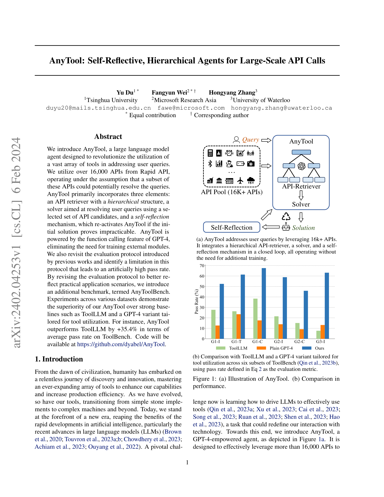

저자: Yu Du, Fangyun Wei, Hongyang Zhang | 날짜: 2024-02-06 | arXiv: 2402.04253 | DOI: 10.48550/arXiv.2402.04253

Figure 1
AnyTool은 GPT-4의 function calling 기능을 활용하여 16,000개 이상의 API 풀에서 계층적 에이전트 구조(meta-agent -> category agent -> tool agent)로 관련 API를 검색하고, self-reflection 메커니즘으로 실패한 쿼리를 반복 재시도하는 plug-and-play tool learning 에이전트이다. ToolBench에서 ToolLLM 대비 평균 pass rate +35.4% 향상을 달성했으며, 기존 평가 프로토콜의 인위적 pass rate 부풀림 문제를 지적하고 수정된 평가 기준을 제안했다.
6. GPT-4 평가 일치율: 인간 평가와 96.5% 일치율 확인 (GPT-3.5는 73.9%)
check_if_request_solvable 호출 시 True 반환, 또는 최대 self-reflection 횟수 도달총평: 16,000개 이상의 대규모 API 풀에서 효과적으로 API를 검색하고 활용하는 문제를 계층적 에이전트와 self-reflection 메커니즘으로 우아하게 해결한 논문이다. 학습 없이 GPT-4 function calling만으로 ToolLLM 대비 +35% 이상의 성능 향상을 달성한 점, 그리고 기존 평가 프로토콜의 근본적 결함을 실험적으로 입증한 점이 핵심 기여이다. 다만, 높은 GPT-4 의존성과 비용, 그리고 실제 API의 안정성 문제 미처리는 실용화의 걸림돌이다. Tool learning 분야에서 LLM의 에이전트적 활용 가능성을 설득력 있게 보여준 중요한 연구이다.